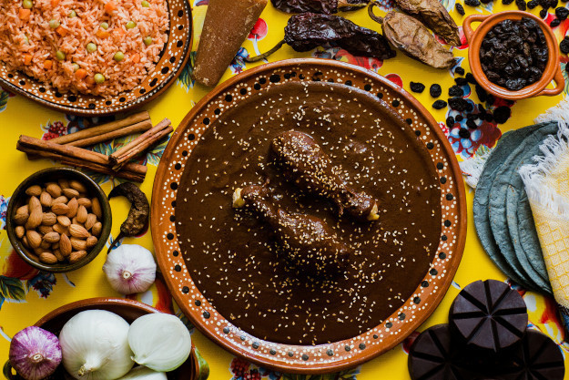
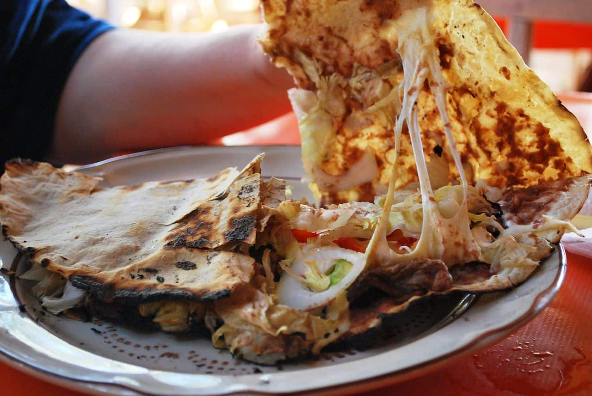
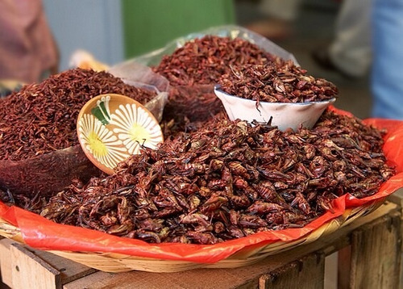
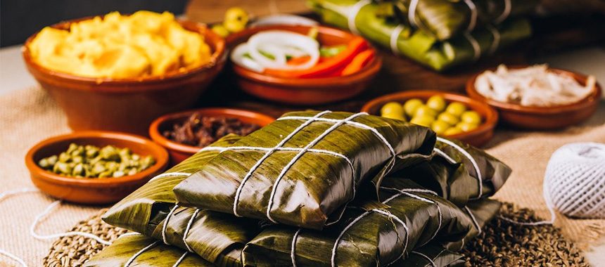

Mole

Mole Oaxaqueño
Mole Oaxqueño es un tipo de platillo específico para el estado de Oaxaca en México. Es una salsa compleja hecha con una larga lista de ingredientes, que incluyen chiles, nueces, semillas, especias, frutas y chocolate. La salsa puede tardar varias horas en hacer y a menudo se sirve sobre pollo o carne de cerdo, junto con arroz y tortillas.
Mole Oaxqueño es conocido por su rico y complejo sabor, que proviene de la combinación de los diferentes ingredientes. Tiene una ligera dulzura del chocolate y la fruta, un sabor ahumado de los chiles tostados y una nuez de las semillas y nueces.
Mole Oaxqueño es un plato tradicional que a menudo se sirve en ocasiones especiales como bodas, cumpleaños y fiestas religiosas. Es una fuente de orgullo para la gente de Oaxaca, que lo ha estado haciendo por generaciones.
Tlayudas

Tlayuda Oaxaqueña
Tlayuda es una tortilla grande y crujiente que es un alimento popular en Oaxaca, México. A menudo se conoce como la "pizza Oaxacan" debido a su tamaño y coberturas. Las tlayudas están hechas con una tortilla grande y delgada que se cocina hasta que estén crujientes, luego cubiertas con una capa de frijoles refritos, queso oaxaca rallado y una variedad de otros ingredientes como carne, verduras y salsa.
Los ingredientes en un Tlayuda pueden variar ampliamente dependiendo de la región y la preferencia personal del cocinero. Algunos coberturas comunes incluyen chorizo (una salchicha picante), tasajo (carne de res en rodajas finas), aguacate, tomates y lechuga. El Tlayuda generalmente se dobla por la mitad y se sirve caliente, a menudo con un lado de salsa o guacamole.
Tlayudas es una comida callejera popular en Oaxaca, y también se sirven en restaurantes y mercados de toda la región. Son una comida abundante y satisfactoria que se puede disfrutar en cualquier momento del día, y son imprescindibles para cualquier persona que visite Oaxaca.
Chapulines

Chapulines Oaxaqueños
Los chapulines son un alimento tradicional en Oaxaca, México que están hechos de saltamontes tostados. Son una comida popular y se pueden encontrar en los mercados de toda la región. Las capulinas son ricas en proteínas y se consideran una fuente de alimento nutritiva.
Para preparar chapulines, los saltamontes se cosechan primero y luego se asan con sal y especias hasta que estén crujientes y doradas. Se pueden comer como un refrigerio por sí solo o usarse como una cobertura para otros platos, como tacos o tlayudas.
Los chapulines han sido parte de la dieta de oaxacán durante siglos y están profundamente arraigadas en las tradiciones culturales de la región. A menudo se sirven en eventos y celebraciones especiales, y muchos los consideran un manjar. Si bien algunas personas pueden dudar en probarlas al principio, las capulines son un alimento único y sabroso que definitivamente vale la pena intentarlo para cualquiera que visite Oaxaca. han sido parte de la dieta de oaxacán durante siglos y están profundamente arraigadas en las tradiciones culturales de la región. A menudo se sirven en eventos y celebraciones especiales, y muchos los consideran un manjar. Si bien algunas personas pueden dudar en probarlas al principio, las capulines son un alimento único y sabroso que definitivamente vale la pena intentarlo para cualquiera que visite Oaxaca.
Tamales

Tamales Oaxaqueños
Los tamales son un alimento tradicional en Oaxaca, México que están hechos de una masa a base de maíz llamada Masa que está llena de varios ingredientes, como carne, verduras y queso. El relleno se envuelve en una cáscara de maíz y al vapor hasta que la masa esté cocida y los sabores se han combinado.
Los tamales se pueden hacer con una variedad de rellenos, que incluyen pollo, cerdo, carne de res, frijoles, queso y verduras. A menudo se sirven con salsa o guacamole y son un alimento básico en muchas partes de México y América Central.
En Oaxaca, los tamales son un alimento popular que a menudo se venden en los mercados y en las esquinas. Se pueden disfrutar como una comida por su cuenta o como un refrigerio durante todo el día. Los tamales son una comida deliciosa y abundante que es perfecta para cualquiera que busque probar una cocina tradicional de oaxacán.
Chocolate
 Chocolate Oaxaqueño
Chocolate Oaxaqueño
El chocolate tiene una larga historia en Oaxaca, México, que se remonta a las antiguas civilizaciones que alguna vez habitaron la región. Hoy, Oaxaca es conocido por su rico y sabroso chocolate, que se realiza utilizando métodos tradicionales que se han transmitido a través de las generaciones.
El chocolate de oaxacán está hecho con frijoles de cacao que se cultivan en la región, así como otros ingredientes como azúcar, canela y almendras. Los frijoles se tostan y se muelen en una pasta, que luego se mezcla con los otros ingredientes para crear un chocolate suave y cremoso.
Una de las formas más populares de disfrutar del chocolate oaxacán es la forma de una bebida de chocolate caliente. El chocolate se derrite y se mezcla con leche y especias para crear una bebida rica y sabrosa que sea perfecta para los días fríos.